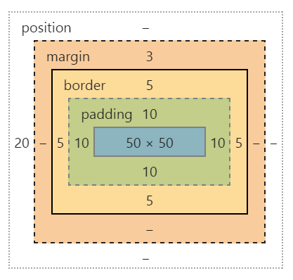

Créé par Jason Conard
Projet sur Github voir la branche gh-pages.
Présentation accessible via http://jasonconard.github.io/workshop-css/#/
Arbre structurant une page HTML.
C'est la base de toute page HTML manipulable via du Javascript. C'est sur ses éléments que l'on affecte des propriétés de style sur la page web.
AngularJS : Framework JavaScript, directives, alternative aux Web Components.
CSS 3 : Norme CSS la plus récente.
SASS : Simplification de l'écriture du CSS.
ng-class :
Gère les classes d'un élément du DOM.
ng-if / ng-show :
Affiche / Cache un élément selon le booléen donné en paramètre.
Les directives d'AngularJS créent des classes sur les éléments pour gérer des transitions.
Exemple :
ng-if appelle .ng-leave-active / .ng-enten-active
selecteurs {
propriété : valeur;
...
}
Nesting : Imbrication des blocs sans avoir des sélecteurs à rallonge.
Variables : Génériser certaines valeurs, comme les couleurs d'un thème.
Mixins : Regroupement des préfixes vendeurs, simplification d'écritures longues et répétitives.
Fonctions : Tout un panel de fonctions utilisables pour simplifier des traitements.
@mixin box-shadow($what : 1px 1px 2px black) {
-webkit-box-shadow: $what;
-moz-box-shadow: $what;
box-shadow: $what;
}
.parent-class {
.child-class {
background-color : $primary-color;
@include box-shadow(0px 2px 2px $background-color);
}
}
.
Logique de positionnement d'un bloc.
Valeurs : static (par défaut), relative, absolute, fixed.
Créé un contexte pour les blocs fils et non static.
Le contexte sert à utiliser par exemple, des pourcentages.
Si on utilise width : 50%; la largeur de l'élément sera égale à 50%
du parent non static le plus proche.
Cas particulier pour les pourcentages :
margin-bottom : 50% ==> Le pourcentage ne sera pas relative à la hauteur, mais à la largeur, ouais ! C'est mal fait !
Le contexte permet aussi d'utiliser z-index.
Les propriétés de positionnement top/right/bottom/left ont des effets différents selon les valeurs de la propriété position.
static / relative :
Un élément relative se positionne donc relativement à son parent, chaque élément relatif s'empile dans l'ordre donné. Les valeurs de positionnement bougent l'élément en rapport avec la position initiale qu'il devrait avoir.
absolute :
Un élément absolu se positionne en rapport à son dernier parent non static. Si on dit bottom 0px, l'élément se place en bas de ce parent.
fixed :
Position relative à la fenêtre.
Le display gère la logique d'affichage de l'élément courant. Par exemple sur un élément relative.
Un DIV de base a un display BLOCK, donc chaque DIV passe par dessous les autres.
Un SPAN de base a un display INLINE, donc chaque SPAN suit l'autre sur la même ligne.
A savoir qu’un display inline n’est pas redimensionnable alors qu’un block oui.
Pour couper la poire en deux, un élément redimensionnable et qui s’aligne à ses frères aura “display : inline-block”
Différents display existent pour simuler les listes et les tableaux.
Un dernier display tout récent nommé “flex” permet de gérer des éléments responsif plus facilement.
A la même manière que le weight en Android, display flex permet de gérer la largeur d’éléments par pondération.
Chaque élément dans un élément en flex sera aligné.
Si un élément parent contient display flex. Alors ses enfants qui utiliseront la propriété flex ( flex : un nombre) pourra définir la pondération en largeur de l’élément. Si flex n’est pas défini, l’élément prendra la place restante pour tenir à la ligne.
Une astuce avec display flex est l’alignement vertical. Si vous déclarez un bloc parent en “display : flex”. Vous pouvez centrer son bloc enfant en affectant à cet enfant la propriété “margin : auto”.
Depuis CSS2 : Permet de gérer l'affichage sur différentes sorties, imprimante, braille, tv ...
Depuis CSS3 : Selon des tailles, height, max-height, min-height, idem pour width, orientation pour les mobiles...
@media(max-width : 1000px) {
body {
font-size : 12px;
}
}
.mon-bouton {
//Quelques propriétés
display: flex;
@include transition(all 200ms ease-out);
&:hover {
@include box-shadow(0px 3px 1px $shadow-color);
}
> span {
margin: auto;
}
}
…
#left-panel {
position: absolute;
width : 320px;
top : 0px;
left : -320px;
@include transition(left 200ms ease-out);
&.panel-open {
left : 0px;
}
}
…
.list-item {
…
transform : scale(1,1);
@include transition(transform 200ms ease-out);
&.ng-leave-active {
transform : scale(0,0);
}
}
2 techniques : Minimifier, Nesting intelligent
Minimifier un CSS consiste à réduire l’écriture d’un élément.
Exemple classique ⇒ margin : 5px 3px 5px 3px (haut droite bas gauche)
On peut l’écrire aussi ⇒ margin : 5px 3px (haut-bas droite-gauche)
On a aussi ⇒ margin : 5px 5px 5px 5px, ça devient ⇒ margin : 5px
Ceci fonctionne avec les border, border-radius et padding.
On doit limiter le Nesting à 3 voir 4 niveaux pour pas avoir des appels longs trop souvent.
On doit aussi d’un autre côté limiter le nombre de selecteurs pour ne pas avoir un CSS à rallonge qui serait long à interpréter.
reveal.js comes with a few themes built in:
Black (default) -
White -
League -
Sky -
Beige -
Simple
Serif -
Blood -
Night -
Moon -
Solarized